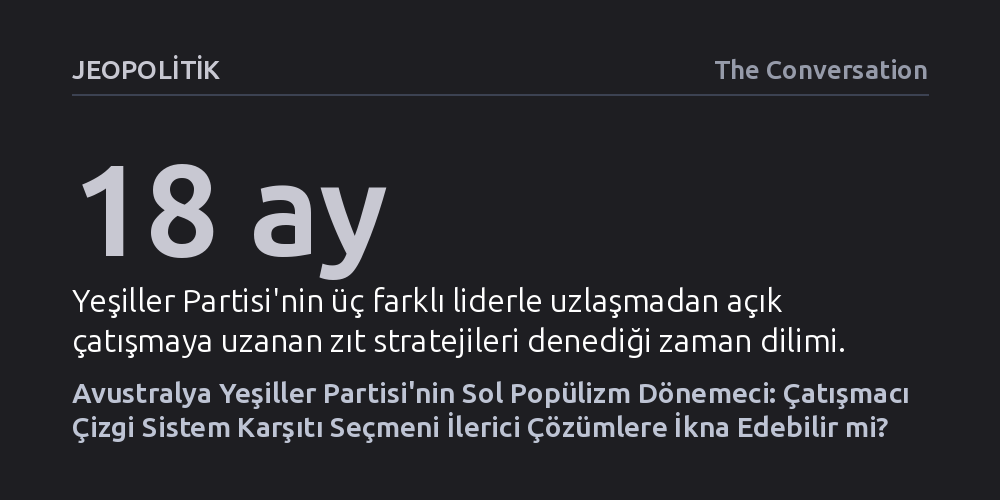

JEOPOLITIK · The Conversation · 2026-10-12
Avustralya Yeşiller Partisi, son seçim yenilgisinin ardından İşçi Partisi ile uzlaşmayı terk ederek çatışmacı bir sol popülizme yöneldi. Ancak bu strateji, düzene öfkeli seçmeni kazanamadığı gibi derinleşen kurumsal güvensizliğin sol yerine aşırı sağa yaraması riskini barındırıyor.
Siyasi kutuplaşmanın sağ-sol ayrımından ziyade düzen yanlısı ve düzen karşıtı eksenine kaydığı bir dönemde, sistem karşıtı sert bir söylem benimsemenin ilericilere değil aşırı sağa alan açtığını somut verilerle gösteriyor.

2025 federal seçimlerinde Yeşiller Partisi'nin Temsilciler Meclisi'ndeki dört sandalyesinden üçünü kaybetmesi ve parti lideri Adam Bandt'in koltuğundan olması, partide derin bir stratejik krizi tetikledi. Seçim yenilgilerinin siyasi partilerde aşırı tepkilere yol açtığı bilinir; nitekim Yeşiller de yalnızca 18 ay içinde üç farklı lider görerek önce sert muhalefetten uzlaşmaya, ardından açık çatışmaya savruldu.
İlk tepki, sağlık gerekçesiyle görevi bırakan Larissa Waters döneminde geldi. Waters yönetimi, partinin İşçi Partisi iktidarına karşı fazla engelleyici davrandığı ve seçmen tarafından bu uzlaşmaz tavır nedeniyle cezalandırıldığı sonucuna vardı. Bu doğrultuda yatırımcı vergileri ve çevre yasaları gibi alanlarda hükümetle müzakere edilerek somut yasal kazanımlar elde edildi; ancak bu uzlaşmacı tutum partinin kamuoyu desteğini artırmaya yetmedi.
Waters'ın ardından ilk kez çekişmeli bir oylamayla liderliğe seçilen David Shoebridge ise tam tersi bir ders çıkardı. Shoebridge çizgisine göre, yasa pazarlıklarıyla elde edilen mütevazı kazanımlar Yeşiller'i İşçi Partisi'nden ayrıştırmaya yetmiyor ve partiyi kimliksizleştiriyordu. Böylece Yeşiller, politika üretip yasama sürecini etkileme hedefinden vazgeçip, doğrudan İşçi Partisi'nin yerini alma iddiasıyla oy maksimizasyonuna ve açık çatışmaya odaklanan yeni bir dönemece girdi.
Yeşiller'in yaşadığı stratejik ikilemin kökeninde, Avustralya parti sisteminin yapısal olarak parçalanması yatıyor. Ülkedeki iki ana partinin toplam oy oranı giderek eriyor ve çoğunlukçu seçim sisteminin koruyucu bariyerlerine rağmen parlamentoda bağımsız ve üçüncü partilerin ağırlığı artıyor. Ancak İşçi Partisi'nin popülaritesi düşerken, partiden kopan seçmenin doğrudan Yeşiller'e yönelmemesi Yeşiller için çözülmesi gereken asıl bulmacayı oluşturuyor.
Bu tıkanıklık, federal siyasetin hangi eksende örgütlendiği sorusuyla doğrudan bağlantılı. Siyaset klasik sağ ve sol ayrımı üzerinden yürüdüğünde, sol eğilimli seçmen için Yeşiller doğal bir sığınak işlevi görüyor. Ne var ki seçmen tercihlerini asıl belirleyen dinamik düzen yanlıları ile düzen karşıtları arasındaki mücadeleye dönüştüğünde, Senato'daki kilit dengesini hükümetle yasal pazarlıklar yapmak için kullanan bir parti kaçınılmaz olarak yerleşik düzenin bir parçası gibi algılanıyor.
Yeşiller'in İşçi Partisi'ni bütünüyle ikame etme iddiası, bu algı tuzağından kurtulma çabasını yansıtıyor. Ne var ki mevcut kurumsal düzene öfkeli seçmeni yakalama konusunda sağ popülist One Nation partisi çok daha avantajlı bir konumda bulunuyor. Eyalet seçimleri, One Nation'ın hem İşçi Partisi'nden hem de Muhafazakâr Koalisyon'dan oy devşirebildiğini gösteriyor.
İşçi Partisi'nin yerini alma iddiası Yeşiller'i iki cepheli çetin bir mücadeleye zorluyor. İlk cephe, Albanese hükümetinin politikalarından hayal kırıklığına uğrayan kentli ve ilerici seçmeni partiye çekmek ki Yeşiller'in en gerçekçi büyüme alanı burası. İkinci ve çok daha zorlu cephe ise merkez partilerden kopup aşırı sağa yönelen seçmen akışını tersine çevirebilmek.
Avrupa'daki seçimleri inceleyen karşılaştırmalı siyaset araştırmaları, aşırı sağ popülist partiler ile yeşil ve sol hareketler arasında doğrudan bir seçmen geçişkenliğinin neredeyse hiç olmadığını ortaya koyuyor. Dolayısıyla Yeşiller ile One Nation arasındaki rekabet, mevcut seçmenleri birbirinin elinden almaktan ziyade, yaklaşan seçimin ana gündem maddesinin ne olacağı ve ülkedeki ekonomik sıkıntıların faturasının kime kesileceği üzerine kurgulanıyor.
Partinin yeni lideri David Shoebridge, sağ popülistlerin toplumdaki öfkeyi anladığını ancak faturayı zengin elitler yerine göçmenlere keserek bu tepkiyi "tamamen yanlış hedefe" yönelttiğini savunuyor. Ne var ki sistemin yolsuzluklarla çürüdüğüne ve elitler tarafından gasp edildiğine dair popülist bir anlatı kurmak, seçmeni sistemin kurtarılamaz olduğuna ikna ederek genel bir siyasi sinizme yol açma riski taşıyor. Avrupa deneyimi, bu tür güvensizlik ve umutsuzluk dalgalarından nihai olarak her zaman aşırı sağın beslendiğini gösteriyor.
Dışarıda çatışmacı ve popülist bir kimlik inşa etmeye çalışan parti, içeride köklü bir örgütsel gerilimle boğuşuyor. Yeşiller geleneksel olarak liderlerini parlamento grubunun tam mutabakatıyla belirlerdi; fakat 2025 yenilgisinin yarattığı stratejik bölünme, parti tarihinde ilk kez oylamayla sonuçlanan bir liderlik yarışını zorunlu kıldı. İşin ironik yanı, taban demokrasisini en temel ilkesi sayan bir partinin liderini yalnızca 11 milletvekilinden oluşan dar bir parlamento grubunun belirlemiş olmasıydı.
Yeni lider Shoebridge ve yardımcısı Steph Hodgins-May, gelecekteki liderlik seçimlerinde genel üyelere oy hakkı tanıma taahhüdünde bulundu. Ancak bu vaat de kendi içinde çözülmesi zor kurumsal düğümler barındırıyor. Her üyeye tek oy hakkı tanınması büyük eyalet şubelerinin hakimiyet kurmasından çekinen küçük eyaletlerce dirençle karşılanırken, eyalet bazlı ağırlıklandırma modelleri de demokratik temsil adaletsizlikleri yaratıyor.
Daha da önemlisi, doğrudan parti tabanı tarafından seçilen bir liderin meşruiyeti artsa bile, bu durum partinin stratejik açmazlarını kendiliğinden çözmüyor. Aksine, doğrudan üyelerden yetki alan güçlü bir lider figürü, eyalet örgütlerinin ve parlamento grubunun denetim mekanizmalarını zayıflatarak siyasetin aşırı kişiselleşmesine ve genel merkezin merkezileşmesine kapı aralayabilir. Yeşiller'in çatışmacı bir popülizmi benimserken aşması gereken en büyük sınav, bir yandan sisteme duyulan öfkeyi dile getirirken diğer yandan kolektif demokratik mücadelenin gerçekten somut sonuçlar üretebileceğine seçmeni ikna edebilmek.